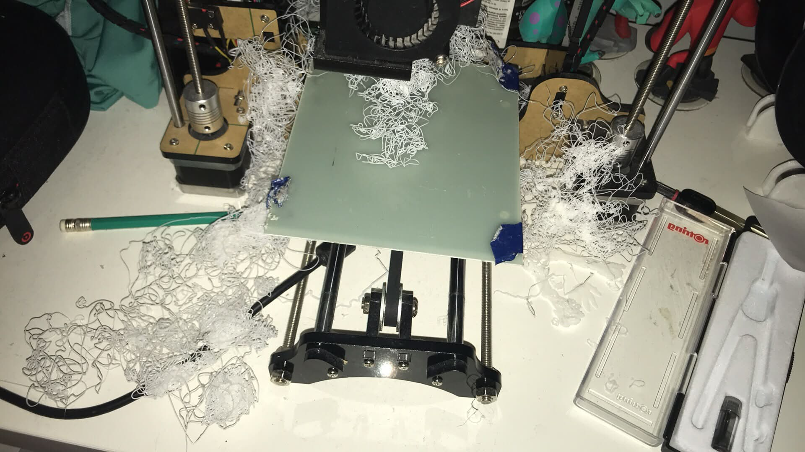

Første 3D-printer (i deler, så i en haug, så printet den)
Min første 3D-printer i byggesett, tretten år gammel. Inngangen til maskinvare. Den lærte meg noe hvert senere maskinvareprosjekt har bekreftet: programvarefeil er høflige, mekaniske feil kaster filament på veggen og fyller rommet med lukten av brent plast.
Hva det faktisk var
- En kasse med deler som etter en lang helg ble en fungerende kartesisk printer.
- Ingen auto-bednivellering, ingenting med lukket sløyfe, ingen lett slicer. Du nivellerte med et papirark og følte deg smart når det funket.
- En egen slicer på PC-en som lagde gcode firmwaren ikke alltid var enig i.
Hva det lærte meg
At maskinvare ikke er programvare med flere steg. Det er en egen disiplin. En løs reim ser ut som et kalibreringsproblem. Et kalibreringsproblem ser ut som en firmware-feil. En firmware-feil ser ut som at printeren er besatt. Du lærer å sjekke de billige forklaringene først, i rekkefølge, hver gang. Det er en nyttig vane å ta med tilbake til programvarejobben.
I tillegg: oppdagelsen av spaghetti-printen som folkelig begrep, og beroligelsen av å ha brannslukker i nærheten.
